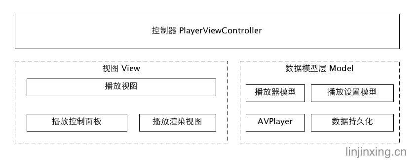
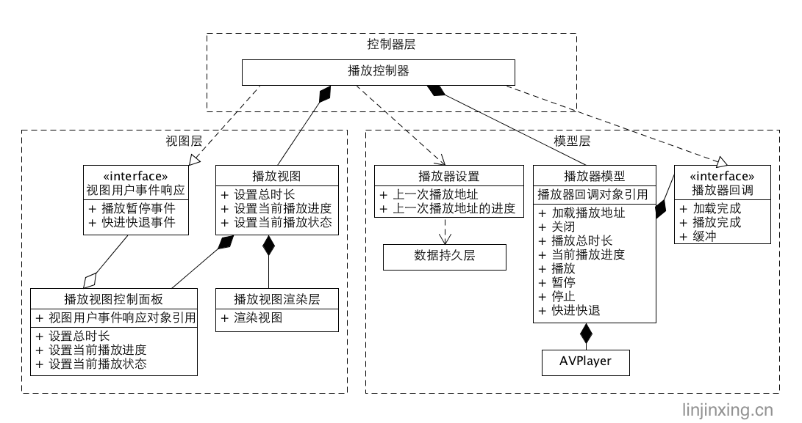
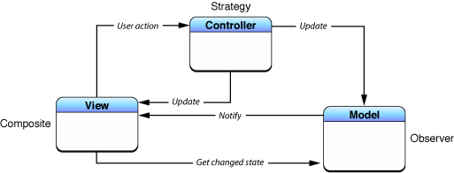

郑重申明，原创文章，转载请注明出处：彤星的博客-MVC架构
本文试图解决以下问题：
- MVC有哪些优点？
- 掌握MVC架构
- 根据设计模式的单一职责，理清MVC中M,V,C的职责，特别是C(Controller)的职责，很多人对其有比较大的误解
- 做架构设计时，如何应用MVC做设计
- MVC架构中主要使用的设计模式
和MVVM，MVP的区别将在另一篇中介绍。
简介
MVC全名是Model View Controller，是模型(model)－视图(view)－控制器(controller)的缩写，一种用于有用户界面的软件架构模式，它将应用程序分为数据、视图、控制器三个部分，从而将代码分离。而模型层将业务逻辑聚集到一个部件里面，在改进和个性化定制界面及用户交互的同时，不需要重新编写业务逻辑。(维基百科解释)
MVC优点
耦合度低
视图层和业务模型层完全分离，它们之间没有任何耦合，因此视图层和业务层可以随意地变化，而这也符合设计模式的迪米特原则。重用性高
由于视图层和业务模型层完全分离，能很大程度上保证他们被继承，组合，关联，依赖。容易分工，提高开发效率
可以将界面和模型层分配给两个人同时进行开发，缩短开发周期。扩展容易
界面变化时，业务模型层可以完全保持不变，反之亦然。
架构分层
现在让我们设计一个播放器App的软件架构，个人认为分层应该如下: 现在让我们设计一个播放器App的软件架构，个人认为分层应该如下: 
C层的PlayerViewController在最顶层，负责调用View和Model，是V和M之间的桥梁，而V层和M层是处于同一层，他们之间没有任何调用关系；
再来看V层是一个PlayerView，它负责调用PlayerViewConrolerPanel实现和用户交互的相关职责，用户可以暂停，播放，快进，查看播放进度等等，而PlayerViewRender负责渲染PlayerModel解码的视频数据，也就是用户看到的视频；
最后是M层,PlayerModel和PlayerSettingModel都属于M层，PlayerModel需要加载视频数据，并解码，并控制播放，暂停，停止等播放器行为，而PlayerSettingModel记录了之前播放的地址以及播放的进度，请注意，这里PlayerModel和PlayerSettingModel也在同一层，他们之间没有任何的调用关系，都是通过C层传递数据。

这是一个播放器的软件详细设计(看不懂UML图的，请百度)。
简单定义
Model（数据模型）
模型封闭了业务逻辑和数据处理，通常一个M可以被多个界面视图使用。模型的唯一职责：承担数据处理，包括业务逻辑。View（视图）
视图是用户可以看到的部分。视图的唯一职责：负责展示数据模型层传递的数据以及用户行为响应。Controller（控制器）
控制器是一个或者多个M和一个或者多个V之间的中介，是M和V之间数据交换的桥梁。控制器职责：负责M和V之间的数据交换。
几种模式分析
- 传统MVC 
传统模式V和M之间需要相互调用，知道对方的存在，明显耦合度比较高。
- 进化的MVC

当V层用户事件发生时，用户事件传递到C层，C层再调用M层响应用户事件，可能是从服务器获取数据，或者更新，删除数据。
当M层数据变化时，会通知C层，C层再调用V层接口更新用户界面，完成更新操作。
使用的设计模式简介
既然是简介，这里省略几百字。：）
- 中介者：C承担V和M之间的中介
- 组合： 用户看到的视图，是由多个视图组合而成，比如播放器由播放器控制面板和播放器视图渲染组合而成
- 职责链：当用户点击控制面板上的按钮时，如果按钮不处理事件，事件就会一直往父视图传递，直到事件被处理了
- 策略：用户的事件需要被不同地处理，通常会调用不同的model处理函数
- 观察者：当数据更新时，需要通知C，数据变化了。
MVC的缺点
- 没有明确的定义
- 不适合小型，中等规模的应用程序
- 增加系统结构和实现的复杂性
- 视图与控制器间的过于紧密的连接
- 视图对模型数据的低效率访问
- 一般高级的界面工具或构造器不支持模式
除了第4和6点，由于不了解其它的开发环境，其它观点我完全不同意，本人未发现目前MVC有什么缺点。
还有疑问？欢迎和我一起讨论指正，请添加QQ群：515767434